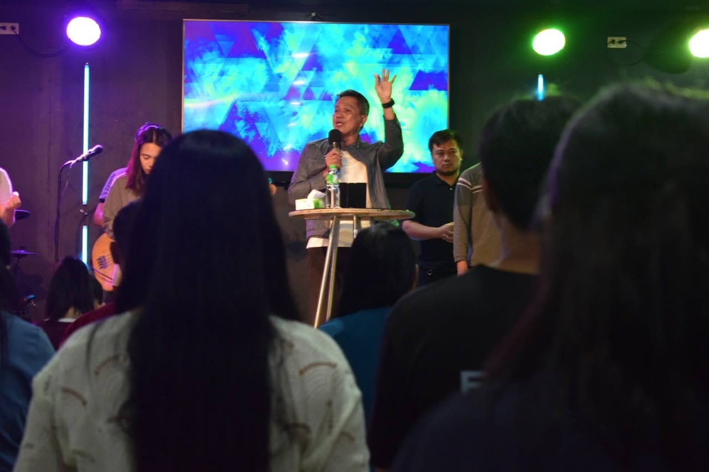
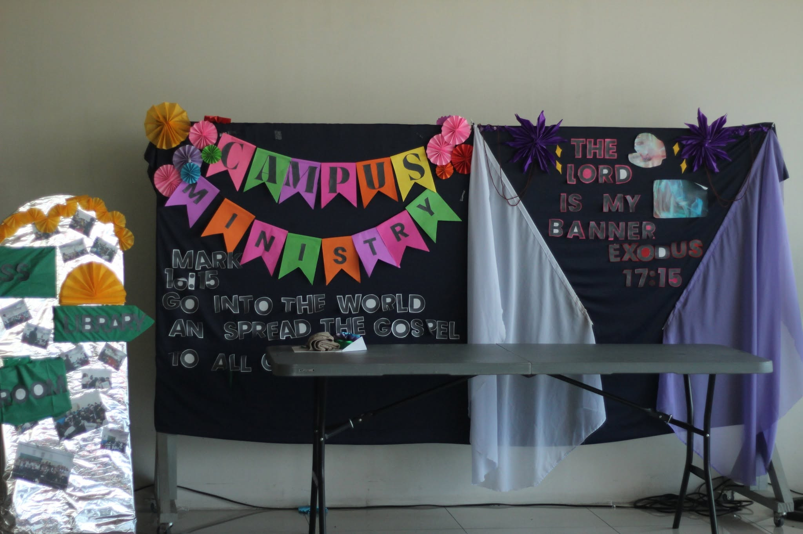
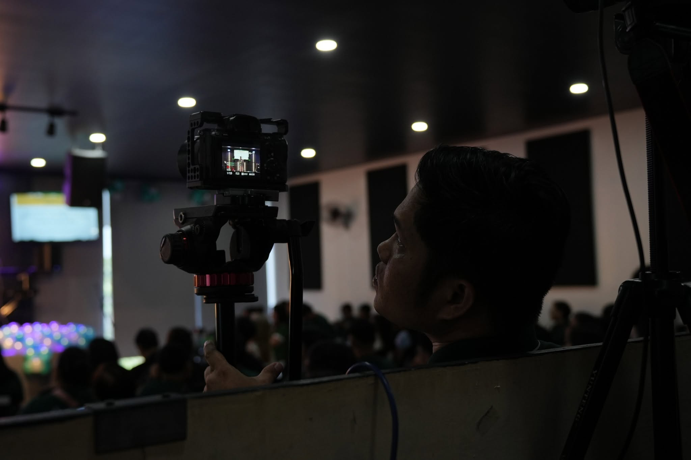

Our Ministries
Every Member
A Minister.
At VCA Muzon, we believe that every believer has a God-given purpose and a place to serve. Through our ministries, we grow together, build one another up, and impact our church and community for Christ.
"As each has received a gift, use it to serve one another, as good stewards of God's varied grace."
— 1 Peter 4:10
WORSHIP MINISTRY
We lead the church in worshipping God through music and creative arts, creating an atmosphere where hearts are lifted and lives are changed.
Intercessory Ministry
We stand in the gap through prayer, believing in God's power to transform lives, families and our nation.

Evangelism Ministry
We share the Good News of Jesus Christ and reach our community with His love and the message of salvation.
Welcome Ministry
We create a warm and welcoming environment where everyone feels loved, valued, and right at home.
Teaching Ministry
We teach and equip believers in the foundations of the Christian faith through discipleship, membership classes, and leadership development, preparing them to serve and lead effectively in the church.
Kids Ministry
We partner with parents to teach children about God's love in fun, safe and age-appropriate ways.

Campus Ministry
We reach, disciple, and empower students to follow Christ in their schools, helping them grow in their faith and become positive influences in their generation.

Media Ministry
We use media and technology to support worship services, communicate the Gospel, and help share God's message through visuals, livestreams, photography, and digital platforms.